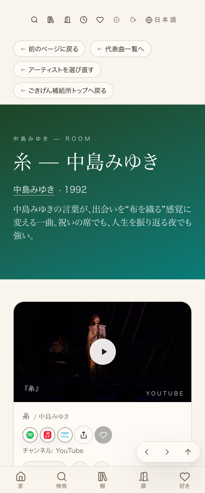

実装元(656番)：糸=動画重複解消

実装元(656番)：カバー・パロディ見出し+ハーフサイズ

| 確認項目 | 結果 |
|---|---|
| ハナレグミ | 見出し1件・重複0件 |
| 秦基博 | 見出し1件・重複0件 |
| 平原綾香 | 見出し1件・重複0件 |
| 郷ひろみ | 見出し1件・重複0件 |
| 井上陽水 | 見出し1件・重複0件 |
| 岩崎良美 | 見出し1件・重複0件 |
| Jamiroquai | 見出し1件・重複0件 |
| Janet Jackson | 見出し1件・重複0件 |
| Janis Joplin | 見出し1件・重複0件 |
| Jocelyn Brown | 見出し1件・重複0件 |